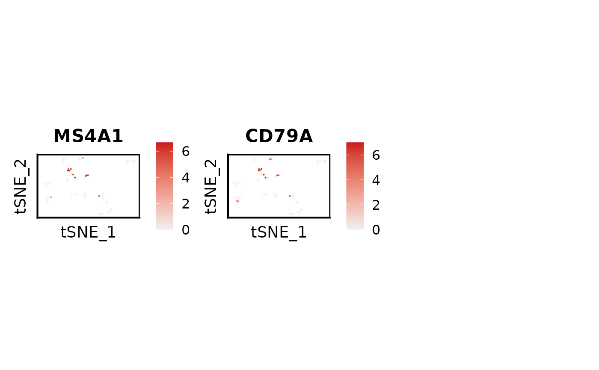

create and save a nice Seurat feature plot in folder featureplot
Arguments
- path
path to markers.csv
- object
Seurat object
- par
column name in markers.csv
- reduction
a character string specifying the dimension reduction
- width
width of output plot (default: 16)
- height
height of output plot (default: length of genes divided by four, ceiling, times three)
- order
should the feature plot be ordered in order of expression
- dir_output
directory to save the output plot (default: ".")
Examples
library(Seurat)
markers <- data.frame(B = c("MS4A1", "CD79A"))
write.csv(markers, "markers.csv")
fPlot(
path = "markers.csv",
object = pbmc_small,
par = "B",
reduction = "tsne",
order = TRUE,
dir_output = "."
)
#> New names:
#> • `` -> `...1`
#> Rows: 2 Columns: 2
#> ── Column specification ────────────────────────────────────────────────────────
#> Delimiter: ","
#> chr (1): B
#> dbl (1): ...1
#>
#> ℹ Use `spec()` to retrieve the full column specification for this data.
#> ℹ Specify the column types or set `show_col_types = FALSE` to quiet this message.

unlink("markers.csv")
unlink("fp_pbmc_small_B.png")